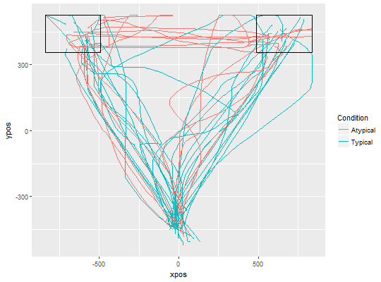

mt_plot_add_rect adds one or several rectangles to a mousetrap plot.
These buttons usually correspond to the borders of the buttons in the
mouse-tracking experiment. It is specifically designed so that the arguments
from the mousetrap_response plugin in OpenSesame can be used.
mt_plot_add_rect(rect, color = "black", fill = NA, ...)
x), y-position (y), width (w), and
height (h) needs to be provided. If columns are not labeled, the
order x, y, w, h is assumed.NA (the default),
rectangles are unfilled.mt_plot_add_rect internally uses geom_rect of the
ggplot2 package for plotting.
mt_plot for plotting trajectory data.
# Load ggplot2 library(ggplot2) # Import, flip, and time-normalize raw trajectories mt_example <- mt_import_mousetrap(mt_example_raw) mt_example <- mt_remap_symmetric(mt_example,remap_xpos="no") mt_example <- mt_time_normalize(mt_example) # Create rectangles matrix rectangles <- matrix( # (The matrix is n x 4, and contains # all relevant data for every button, # (i.e. x, y, width and height values) # in separate rows) c( -840, 525, 350, -170, 840, 525, -350, -170 ), ncol=4, byrow=TRUE) # Plot all time-normalized trajectories # varying the color depending on the condition # and add rectangles mt_plot(mt_example, use="trajectories", x="xpos", y="ypos", color="Condition" ) + mt_plot_add_rect(rect=rectangles)